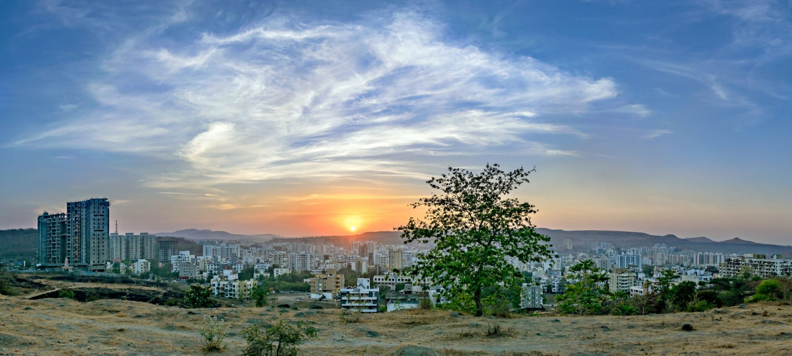
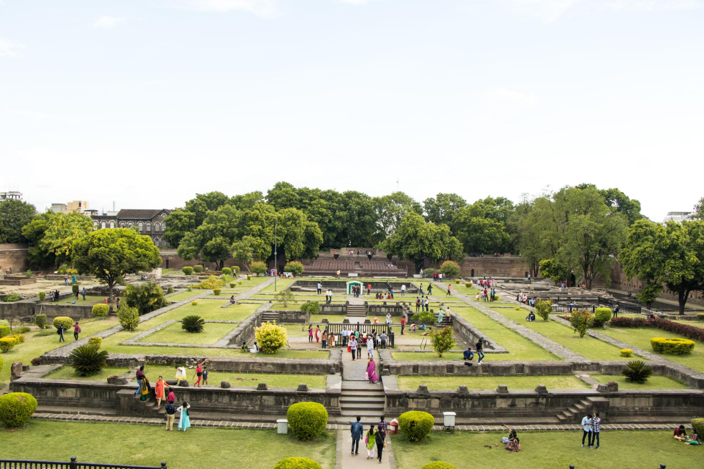
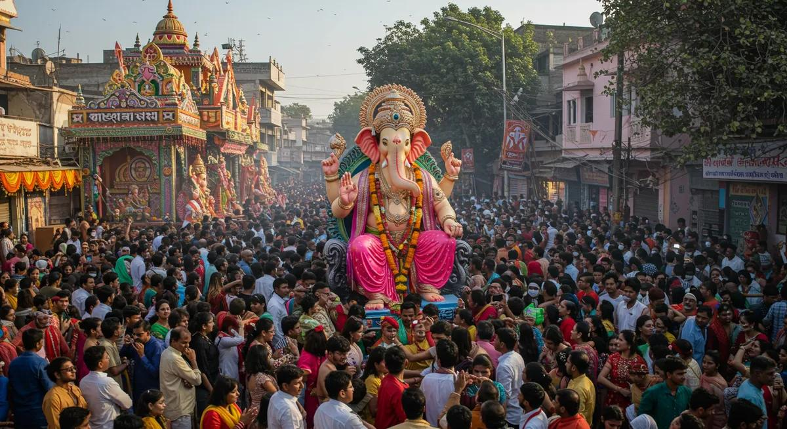
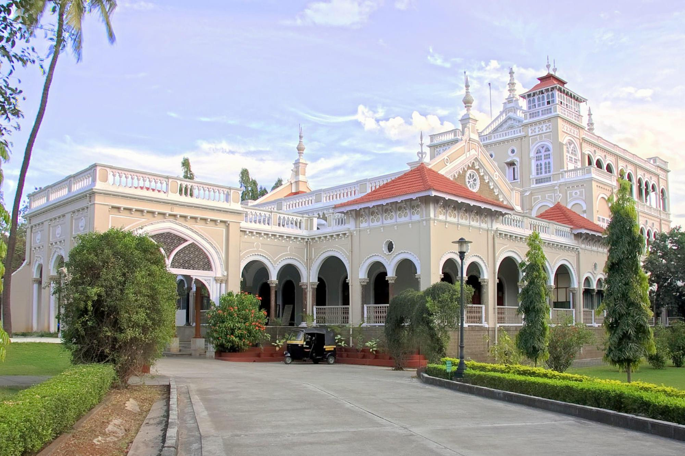
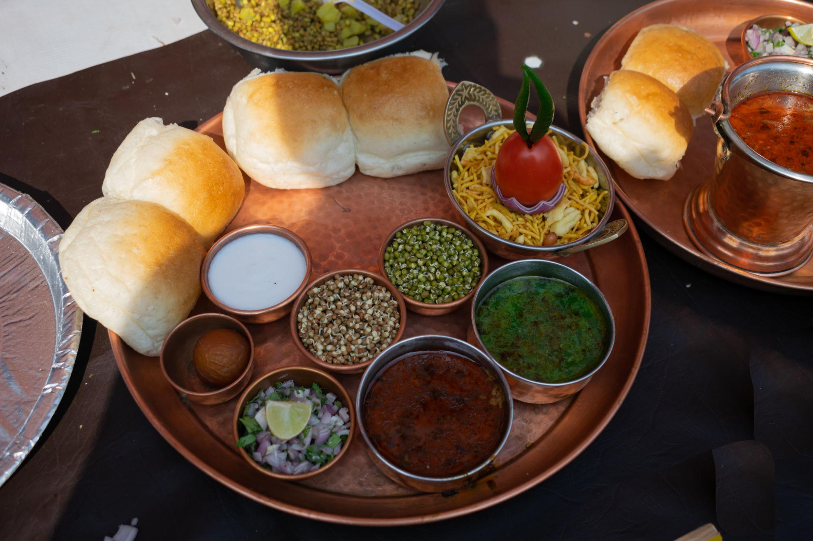
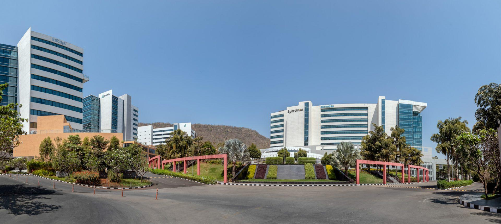
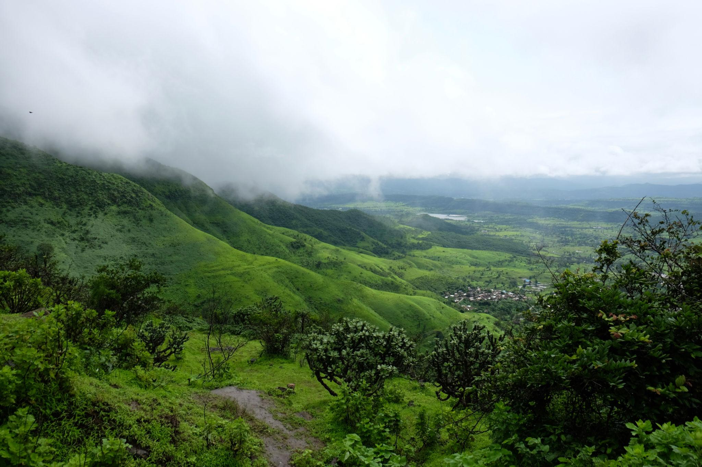
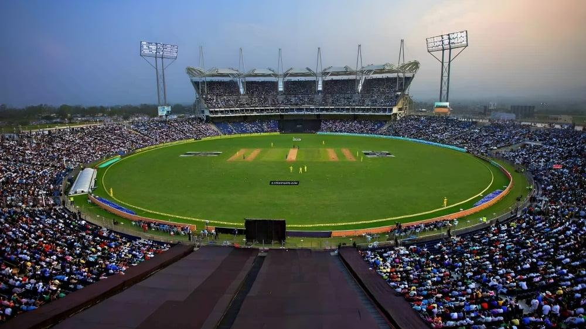

About

Pune, the second-largest city in Maharashtra, is a major economic, educational, and cultural center of India. Popularly known as the "Oxford of the East" and the "Cultural Capital of Maharashtra," the city has a strong reputation for its academic institutions, rich heritage, and modern lifestyle.
Located on the Deccan Plateau near the Sahyadri Hills, Pune enjoys a pleasant climate and a high standard of living. It has evolved into a leading IT and automobile hub, attracting professionals, students, and businesses from across the country.
Historically, Pune was the center of the Maratha Empire under the Peshwas and continues to reflect its legacy through monuments, traditions, and cultural practices. Today, it stands as a perfect blend of tradition and modern development.
- Location: Western Maharashtra near Sahyadri hills
- Famous as: Oxford of the East, Cultural Capital
- Major sectors: IT, Automobile, Education
- Climate: Moderate and pleasant
- Special identity: Blend of history and modern lifestyle
History

Pune has a rich historical background dating back to ancient times, when it was known as “Punnaka.” The region was ruled by dynasties such as the Rashtrakutas and Yadavas before becoming a key center under the Maratha Empire.
In the 17th century, Pune gained importance when Shahaji Bhosale established control over the region. Chhatrapati Shivaji Maharaj spent his early years in Pune at Lal Mahal, shaping the city's historical significance.
During the 18th century, Pune became the headquarters of the Peshwas, making it the political center of the Maratha Empire. Landmarks like Shaniwar Wada reflect this period of growth and power.
After the British defeated the Peshwas in 1818, Pune developed into an important cantonment and administrative center. The city also played a major role in India’s freedom movement through leaders like Lokmanya Tilak and social reformers like Jyotirao Phule.
- Ancient name: Punnaka
- Maratha era: Capital under Peshwas
- British period: Cantonment city
- Freedom movement: Tilak, Phule contributions
- Historic sites: Shaniwar Wada, Lal Mahal
Culture

Pune is widely regarded as the cultural capital of Maharashtra, known for preserving traditional Marathi values while embracing modern urban life. The city has a strong presence of art, literature, music, and theatre.
The Ganesh Festival is one of the most important celebrations in Pune, attracting large crowds and showcasing vibrant cultural traditions. Classical music concerts, theatre performances, and art exhibitions are an integral part of city life.
Pune’s diverse population, including a large student community, gives it a youthful and energetic atmosphere. The city is also known for its famous food culture, ranging from traditional dishes to modern cafés and restaurants.
- Title: Cultural Capital of Maharashtra
- Main festival: Ganesh Festival
- Arts: Theatre, music, literature
- Food: Misal Pav, Vada Pav, modern cafés
- Lifestyle: Blend of tradition and modern youth culture
Tourism

Pune offers a mix of historical landmarks, religious places, and natural attractions, making it a popular destination for tourists. The city reflects Maratha history along with modern recreational spots.
Shaniwar Wada and Aga Khan Palace are among the most important historical monuments. Religious places like Dagadusheth Halwai Ganapati Temple attract thousands of devotees every year.
Nature lovers can visit Sinhagad Fort, Khadakwasla Dam, and nearby hill stations like Lonavala. Gardens such as Saras Baug and Pune Okayama Garden provide peaceful recreational spaces within the city.
- Shaniwar Wada
- Aga Khan Palace
- Sinhagad Fort
- Khadakwasla Dam
- Saras Baug
Famous Food

Pune offers a rich and diverse food culture that combines traditional Maharashtrian flavors, iconic Irani café traditions, and a modern dining scene. The city is famous for its street food as well as long-standing food establishments that have been serving people for generations.
Some of the most popular dishes in Pune include Misal Pav, a spicy curry made from sprouts and topped with crunchy farsan, and Vada Pav, a simple yet delicious street snack. Mastani, a thick milkshake topped with ice cream and dry fruits, is another unique specialty of the city. Bhakarwadi, a crispy and spicy snack, is also widely loved.
Pune is well known for its Irani café culture, where people enjoy bun maska and chai in a relaxed atmosphere. The city also offers traditional Maharashtrian thalis, which include a variety of dishes served in one meal, giving a complete taste of local cuisine.
Popular food areas in Pune include FC Road, which is famous among students for street food, and Koregaon Park, known for modern cafés and international cuisines. Viman Nagar is another growing food hub with food trucks and diverse dining options.
Overall, Pune’s food culture reflects a perfect blend of tradition and modern taste, making it a paradise for food lovers.
- Famous dishes: Misal Pav, Vada Pav, Mastani, Bhakarwadi
- Street food: SPDP, Dahi Puri, Pav Bhaji
- Café culture: Irani cafés (bun maska & chai)
- Thali: Traditional Maharashtrian meals
- Food areas: FC Road, Koregaon Park, Viman Nagar
- Specialty: Mix of traditional and modern food culture
Economy

Pune has a strong and rapidly growing economy, making it one of the most important economic centers in India. The city is known for its diverse sectors including information technology, manufacturing, automobiles, education, and pharmaceuticals.
The manufacturing and automobile industry has been the traditional backbone of Pune’s economy. The city is home to many engineering and automobile companies, making it a major industrial hub. In recent years, Pune has also emerged as a leading IT destination, with large IT parks and companies located in areas like Hinjawadi.
Pune is also a major center for education and pharmaceuticals. It is known as the “Oxford of the East” due to its numerous educational institutions. The city is home to leading pharmaceutical companies, contributing significantly to healthcare and research sectors.
The real estate sector in Pune is growing rapidly due to urban development and increasing population. Expansion of residential and commercial areas has created more job opportunities and boosted the economy.
Overall, Pune continues to grow as one of the fastest-developing metropolitan cities in India, supported by strong infrastructure, connectivity, and sustainable development initiatives.
- Main sectors: IT, manufacturing, automobiles, pharmaceuticals
- IT hub: Hinjawadi IT Park
- Industry: Engineering and automobile production
- Education: Known as “Oxford of the East”
- Growth: Rapid urban and real estate development
- Special feature: Fast-growing metropolitan economy
Environment

Pune’s environmental landscape is shaped by its unique geography, with the city surrounded by the Sahyadri hills and supported by rivers like the Mula and Mutha. Known for its relatively pleasant climate compared to other major cities, Pune experiences hot summers, moderate winters, and a refreshing monsoon season that enhances its greenery.
In recent years, rapid urbanization and population growth have started impacting the city’s environment. Rising temperatures, irregular rainfall patterns, and occasional extreme weather events indicate changing climate conditions. These changes have increased concerns related to heat waves and water availability.
Air quality in Pune remains moderate overall, but certain areas experience higher pollution levels due to traffic congestion, construction activities, and industrial emissions. Managing air pollution is becoming an important priority for maintaining public health and quality of life.
Water pollution is a major environmental challenge. The Mula-Mutha river system faces contamination due to untreated sewage and waste disposal. Lakes such as Pashan Lake have also experienced ecological stress, affecting aquatic life and local biodiversity.
Despite these challenges, Pune continues to promote sustainable development through initiatives such as tree plantation drives, improved waste management systems, and eco-friendly urban planning. The city’s hills, including Vetal Tekdi, Taljai Hills, and Baner Hill, play a crucial role in preserving biodiversity and maintaining ecological balance.
Additionally, nearby natural areas like Bhimashankar Wildlife Sanctuary and Bhigwan Bird Sanctuary contribute to regional conservation efforts and provide important habitats for wildlife, making Pune an environmentally significant region in Maharashtra.
- Climate: Tropical wet and dry with moderate conditions
- Key features: Hills, rivers, and urban green spaces
- Main concerns: Air pollution, water pollution, climate change
- Rivers: Mula and Mutha
- Green zones: Vetal Tekdi, Taljai Hills, Baner Hill
- Conservation: Tree plantation and sustainable development initiatives
Sports

Pune is one of India’s major sporting hubs, known for its modern infrastructure, international-level stadiums, and strong sports culture. The city supports both professional and recreational sports, making it an important center for athletic development.
The Shree Shiv Chhatrapati Sports Complex in Balewadi is a world-class multi-sport facility that has hosted major national and international events. The Maharashtra Cricket Association (MCA) Stadium in Gahunje is another key venue, regularly hosting IPL and international cricket matches.
Pune is also historically significant in sports, as modern badminton was introduced here during the British era. Traditional sports like Mallakhamb and wrestling continue to be popular alongside modern games.
The city is home to several professional teams, including Puneri Paltan in the Pro Kabaddi League. Various academies and training centers provide opportunities for young athletes to develop their skills.
- Major venues: Balewadi Sports Complex, MCA Stadium
- Popular sports: Cricket, badminton, football, athletics
- Traditional sports: Mallakhamb, wrestling
- Teams: Puneri Paltan (Kabaddi)
- Facilities: Modern stadiums and training academies
- Focus: Youth development and sports infrastructure